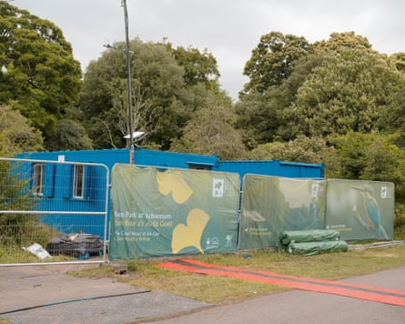
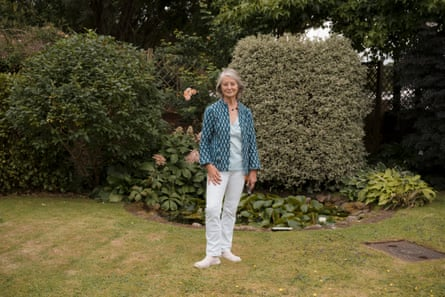
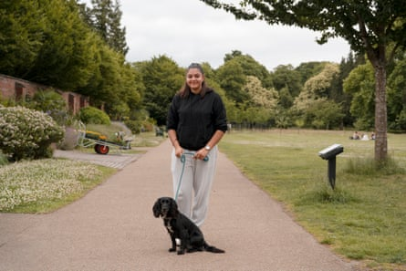

B ute Park, the 56 hectares of gardens and parkland that were formerly the grounds of Cardiff Castle, is known as the Welsh capital’s “green heart”. The space, almost unique in the UK because of its proximity to the city centre, is visited 2.5m times a year.
This week the beeps of reversing lorries and the clanging of construction could be heard as event staff built a huge stage and fenced off swathes of the usually tranquil park for the new Blackweir Live music festival, an event many argue does not strike the right balance between public and private use of the park.
The meadow area of Bute Park is now inaccessible.Photograph: Francesca Jones/The Guardian
Starting on Friday, the site – named after the Blackweir Fields it sits on – will host for the next few weeks gigs by artists including Noah Kahan, Alanis Morissette and Stevie Wonder.
The space can hold 35,000 people and takes up about two-thirds of the park’s 12 hectares (30 acres) of open grassland, including cricket and other sports grounds, according to Friends of Bute Park. On concert days, the group estimates that approximately 29 hectares will be closed off to the public, rising to 45 hectares, or 81% of the whole park, if access routes for concert-goers are included.
In a statement, a spokesperson for Cardiff council said that the Friends of Bute Park figures were incorrect, and that 83% of the park would be open as usual all days other than concert days.
Cardiff is no different to many local authorities in experimenting with new ways to bring in desperately needed cash: the council says the festival, programmed by Live Nation’s Cuffe and Taylor and Cardiff’s Depot Live, will help meet its £27.7m budget shortfall, put money back into the city and bring an expected spectator spend of £35m .
About 100 people have signed an open letter to the leader of the council protesting against the use of the park for Blackweir Live, saying the city is already home to several other music venues.
Fiona Peel objects to how tickets for the festival went on sale before a licence was granted.Photograph: Francesca Jones/The Guardian
They also say the Blackweir Live site has reduced the availability of vital space relied on by people who do not have access to gardens in densely populated parts of Cardiff, and may have a detrimental impact on the park’s flora and fauna as insufficient environmental assessments took place before an indefinite licence was granted.
Cardiff council has pushed back against the allegation, saying that the environmental impact of the festival is being handled by event management professionals, ecologists, arboriculture experts and the city’s parks team.
Bute Park’s Community Orchard, set up in 2021 after more than 50 trees were damaged or destroyed by vandals, is now inaccessible because of a 6-metre-high wall surrounding the site, other than through a locked gate. This has made it impossible for volunteers to water the trees, says Madeleine McGivern, a member of Friends of Bute Park.
She said: “Earlier this year 30 mature trees on the river were cut down for no reason at all. Then temporary bridges to the site were put in the same spot, which is very upsetting.”
Naiya Ghuman said she did not think concerts were a bad idea, ‘but they definitely have to clean it up properly afterwards’.Photograph: Francesca Jones/The Guardian
Fiona Peel, who lives in the park’s 18th-century cottage, said: “I have no problem with using the park for events. What I object to is how this was set up, with no input from the community, selling tickets before the licence was even approved.”
In a statement, a Cardiff council spokeperson said: “There has been opportunity for the community to share their views through the recent premises licencing process [with] input from the community on a range of issues including noise and alcohol licencing, resulting in a series of strict conditions being applied.” It also said that the trees were removed from the park under normal coppicing practice, because they were dead, or suffering from ash dieback.
Naiya Ghuman, a student who was walking her dog Cali in Bute Park on Wednesday, said she was surprised by the size of the festival. “The site is really huge. I don’t think the concerts are a bad idea, but they definitely have to clean it up properly afterwards.”
A review will be conducted following the festival’s conclusion in order to address residents’ concerns, Cardiff council said.